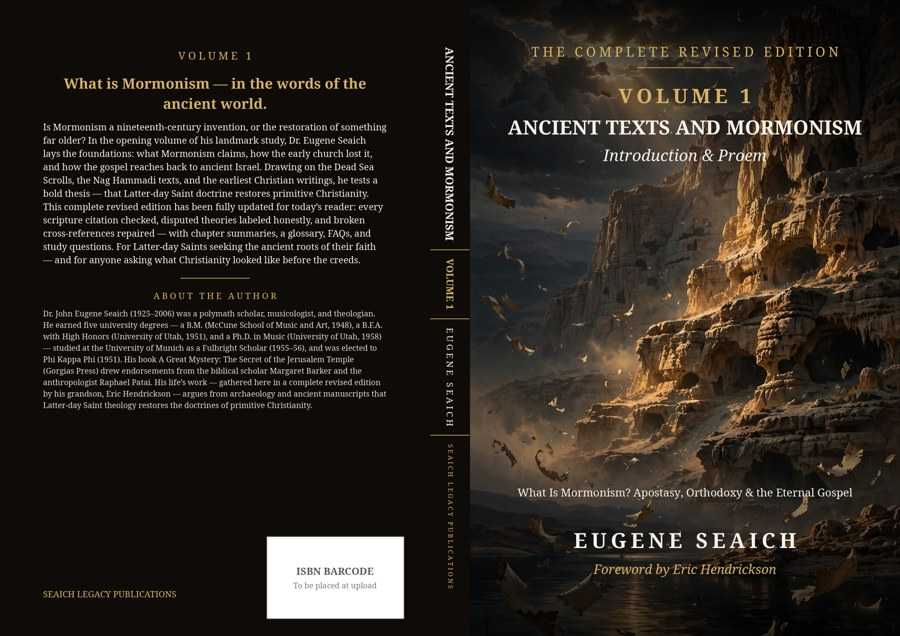

Quick answer
Seaich argues that a general apostasy occurred: the New Testament church had apostles, ordinances, and binding authority, and the New Testament foretold a coming “falling away.” In Seaich’s account, the original structure later dissolved while Greek philosophy reshaped Christian doctrine during the second century. Critics describe the same record as diversity and development rather than a single datable fall, so the conclusion remains theological and historical reconstruction, not settled consensus.
Claim Level 3 · Historical ReconstructionThe Church Jesus Left Behind
Claim Level 2 · Scriptural Reading
Seaich argues the New Testament church was nothing like the loose fellowship of modern imagination. The New Testament church met in Christ’s name (Mt. 18:20), practiced excommunication (Gal. 5:12; 2 Thess. 3:6), and was formally organized with apostles, prophets, evangelists, pastors, teachers, deacons, seventies, and elders (Lk. 6:13; Acts 1:22–26; Eph. 4:11; Lk. 10:1; Acts 14:23).
Converts were baptized by immersion (Mt. 3:16; Acts 8:38–39) and received the Holy Ghost by the laying on of hands (Acts 8:14–17; 19:5–6). The church claimed authority to “bind on earth” what would be bound in heaven (Mt. 16:19; 18:18), forgave sins (Jn. 20:23), and set apart its leaders (Acts 6:5–6; 13:3).
A Falling Away, Foretold
The same New Testament, Seaich notes, predicts the structure would not survive. "Let no man deceive you by any means: for that day shall not come, except there come a falling away (apostasia) first" (2 Thess. 2:3). Paul foresaw a time when believers would not "endure sound doctrine; but after their own lusts… heap to themselves teachers, having itching ears" (2 Tim. 4:3). Jesus warned of false Christs who would "deceive many" (Mt. 24:5, 24); Paul warned of "grievous wolves" entering the flock after his departure (Acts 20:29–30).
The Greek Turn, A.D. 145–170
Claim Level 3 · Historical Reconstruction
Drawing on the historian W. H. C. Frend (The Rise of Christianity, 1984), Seaich dates the decisive shift to between 145 and 170, when "a new kind of thoroughly Hellenized and metaphysically-informed orthodoxy — culminating at the end of the century in the writing of Athenagoras — was beginning to emerge as a 'third race' alongside of the Old Church and Paganism."
The movement’s authors believed Christianity could be proved by logical argument and was "in harmony with the best of Greek philosophy"; their demonstrations would rely on "the twin-alliance of Reason and Scripture." Frend's warning, quoted by Seaich: "From now on there would always be the risk of cleavage between educated Greek-speaking Christians, who were prepared to think of philosophy as an aid to apprehending Christian truth, and those to whom paganism in every form was simply idolatry!"
By the Middle of the Second Century
Claim Level 3 · Historical Reconstruction
The church historian Adolf von Harnack, as Seaich cites him, judged that by the middle of the second century "the majority of Christian congregations, even of Jewish-Christians in Palestine, had been reduced to a kind of deism and moralism" — "a clear indication that the Apostasy was already taking place." Meanwhile, apologists such as Ignatius and Justin Martyr, combating Gnostic docetism, concentrated on what Seaich calls the "Christology of the flesh" — the seedbed of the later orthodox doctrines of the Incarnation and Atonement.
Not until the late second century did the church take "truly definitive steps towards defining its canonical scriptures, its creed and ministerial structure." The consolidation began with Hippolytus (ca. 235) — whose program, Seaich notes from Walter Ullmann, "was considered to be dangerously innovative by his contemporaries."
The Older Road Not Taken
Claim Level 3 · Historical Reconstruction
The "orthodox" consolidation, Seaich argues, displaced something older. Clement of Alexandria (ca. 150–215) still represented the sapiential, apocalyptic tradition of the Jewish church; "the 'orthodox' of his time represented a somewhat novel departure from the authentic apostolic tradition."
Works like the Epistle of Barnabas, the Odes of Solomon, and the Shepherd of Hermas were still considered perfectly orthodox as late as A.D. 200 — the Shepherd was read aloud in Egyptian churches into the fourth century. And the textual record itself is compromised: Rufinus openly admitted altering passages of Origen's De Principiis in his Latin translation, so that "with respect to many documents of the first three centuries, we have little evidence of the original state of their contents."
The Cacophony Test
Claim Level 2 · Scriptural Reading
Seaich's closing evidence is the present. "This, unfortunately, later tradition has largely failed to do — as the 'cacophony' of modern religious dogmas clearly shows."
Christians can no longer agree on eternal security, the reception of the Holy Spirit, the moment of salvation, spiritual gifts, who holds the priesthood, faith versus works, infant baptism, the nature of the Godhead, creation out of nothing, preexistence, predestination, temples, church organization, the state of the soul after death, or deification — to name a fraction of his list. For Seaich, modern Christian disunity is what a foretold apostasy looks like two thousand years later.
The Apostasy in Outline
What Skeptics Say
"Apostasy" is a theological verdict, not a laboratory finding — most historians describe early Christian diversity and development rather than a single datable fall, and Seaich himself documents early Christian diversity: Paul's heirs split into Ebionites, Gnostics, Marcionites, Montanists, Encratites, and later orthodoxy.
Seaich’s "cacophony" argument is an inference, and disunity today does not by itself prove a unity was lost rather than never achieved. Catholics, Orthodox, and Protestants read the same second-century Fathers as evidence of continuity, not rupture.
And Seaich's scholarly witnesses cut both ways: Harnack and Frend were describing the history of dogma, not a Mormon-style restoration. Seaich marks the apostasy material Claim Level 1–3 — LDS doctrine argued through scriptural reading and historical reconstruction, not a settled scholarly consensus.
Questions
Do Latter-day Saints believe every truth was lost?
No. Seaich's claim concerns the loss of the church's structure and authority and the reshaping of doctrine by philosophy — not the disappearance of all truth. He notes that works like Barnabas, the Odes of Solomon, and the Shepherd of Hermas were still read as orthodox into the third century.
What does Seaich mean by "Hellenization"?
The reshaping of biblical theology with the categories of Greek philosophy: what Cardinal Daniélou (as Seaich cites him) called a "steady increase of Greek philosophical terms and concepts," producing Trinitarian dogma as "a radical new combination of human philosophy and Biblical teaching."
Was the early church ever unified enough to fall away from?
Seaich does not claim the early church was monolithic; he documents Paul's legacy dividing among many heirs. His claim is narrower: the original structure — apostles, ordinances, binding authority — dissolved, and the later "orthodox" consolidation was itself an innovation on older traditions.
Why does Seaich trust Clement of Alexandria but not Hippolytus?
Because Clement represents the older sapiential and apocalyptic tradition, while Hippolytus's program of canon, creed, and ministry was considered "dangerously innovative" even in Hippolytus’s own day — and because later editors, Rufinus among them, reworked early texts to fit emerging theology.
Isn't the argument circular?
The fair version of the charge: Seaich's case stands on two legs — the New Testament's own warnings of a coming apostasia, and the second-century record read through Harnack, Frend, and Daniélou. Readers who grant only the second leg will call the same history development rather than decline.
Further Reading
- Eugene Seaich, Ancient Texts and Mormonism, Vol. 1, ch. 2 "The Apostasy" and ch. 4 "'Orthodoxy' and 'Heterodoxy'"
- W. H. C. Frend, The Rise of Christianity (Philadelphia, 1984)
- Adolf von Harnack, "Apostolischer Symbolum," in The New Schaff-Herzog Encyclopedia of Religious Knowledge, vol. 1 (Grand Rapids, 1949)
- Walter Ullmann, A Short History of the Papacy in the Middle Ages (London, 1972)
Related Questions

Continue in Volume 1
Ancient Texts and Mormonism, Vol. 1: Introduction and Proem — What Is Mormonism? Apostasy, Orthodoxy, and the Eternal Gospel
371 pages